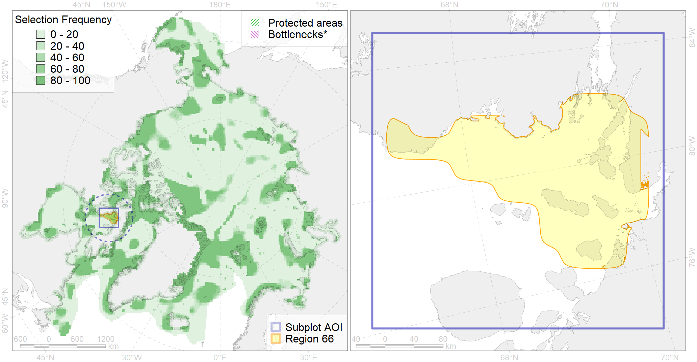

Region 66
Region 66
“ArcNet” scenario 33 achievement for region 66.
Use Accenter for advanced mode.

0
CFs inside of Region completely
2
CFs inside of Region at quarter
5
Complete-targets achievement by Region
7
Half-targets achievement by Region
| CF | Name | Target Achievement for Region | Proportion of Target Achievement in Region | Amount Proportion in Region |
|---|---|---|---|---|
| 3127 | polynya Foxe | 443.2% | 59.8% | 54.6% |
| 3053 | Multiyear Ice distribution in September in the Hudson Bay LME | 270.6% | 65.3% | 52.4% |
| 7138 | III.1.1.5. Foxe Basin shallow shelf | 208.5% | 70.9% | 21.8% |
| 7139 | III.1.1.6. Foxe Basin middle shelf | 126.1% | 48.1% | 17.2% |
| 7045 | Fox Basin trnasitional zone | 92.0% | 44.2% | 16.8% |
| 3035 | Marginal Ice Zone distribution in July in the Hudson Bay LME | 56.2% | 39.4% | 14.8% |
| 5065 | Killer whale summer feeding areas in the North West Atlantic | 197.4% | 20.2% | 13.5% |
| 9025 | polar bear denning areas of FB (Foxe Basin) subpopulation | 15.0% | 15.0% | 12.0% |
| 7215 | Canadian Archipelago kelp patches (2-9) | 20.5% | 11.6% | 7.8% |
| 5093 | Narwhal Somerset Island stock summer distribution | 12.0% | 12.0% | 6.3% |
| 1011 | Atlantic Walrus haulouts in Nunavut and West Greenland | 5.2% | 5.2% | 5.1% |
| 5041 | Bowhead whale summer concentrations in the Baffin Bay | 8.3% | 8.0% | 4.4% |
| 2022 | Harp seal foraging areas in the Hudson Bay | 15.6% | 15.5% | 4.3% |
| 1002 | Atlantic Walrus Summer Distribution in Canada | 9.5% | 6.5% | 3.7% |
| 2010 | Bearded seal whelping areas in the Hudson Bay | 11.4% | 11.4% | 3.1% |
| 2048 | Ringed seal whelping areas in the Hudson Bay area | 10.2% | 9.6% | 2.8% |
| 4075 | Fish zoogeography, Arctic Region, High-Arctic Shelf Province, Hudson District | 26.3% | 9.4% | 2.7% |
| 9007 | polar bear of the FB (Foxe Basin) subpopulation distribution | 5.2% | 4.2% | 2.0% |
| 1003 | Atlantic Walrus Wintering Areas in Canada | 2.9% | 2.5% | 1.9% |
| 4029 | Feeding area of the Arctic charr (Salvelinus alpinus), anadromous populations (F28) | 3.1% | 2.7% | 1.4% |
| 4055 | Range of the Shorthorn Sculpin (Myoxocephalus scorpius) (F 46), American populations | 38.5% | 2.2% | 1.3% |
| 5103 | Bowhead whale Baffin population spring-autumn distribution | 4.5% | 2.4% | 1.3% |
| 4053 | Range of the Fourhorn Sculpin (Myoxocephalus quadricornis) (F 45), Euro-Asian populations | 36.0% | 2.1% | 1.2% |
| 8037 | Salt marshes of the Hudson Bay LME | 3.4% | 2.4% | 1.2% |
| 2061 | Ringed seal circumpolar foraging areas as predicted by MIZ distribution | 3.7% | 1.9% | 1.0% |
| 6015 | Black guillemot (Cepphus grylle mandti) breeding grounds | 5.2% | 1.1% | 0.7% |
| 6083 | Thick-billed murre (Uria lomvia lomvia) wintering grounds | 2.6% | 1.8% | 0.7% |
| 3022 | Marginal Ice Zone distribution in April in the Hudson Bay LME | 4.0% | 1.0% | 0.5% |
| 5112 | Arctic Cetaceans (beluga, bowhead, narwhal) winter habitats as predicterd by MIZ | 0.7% | 0.6% | 0.3% |
| 4041 | Range of the Polar Cod (Boreogadus saida) (F35) | 1.7% | 0.6% | 0.2% |
| 2019 | Harbour seal range in the North Atlantic region | 1.4% | 0.2% | 0.1% |
| 4074 | Fish zoogeography, Arctic Region, High-Arctic Shelf Province, Canadian-Greenland District (10A) | 0.9% | 0.1% | 0.1% |
| 6029 | Glaucous gull (Larus hyperboreus euceretes) breeding grounds | 0.2% | 0.0% | 0.0% |
| 4035 | Feeding area of the Lake trout (Salvelinus namaycush) (F32) | 0.0% | 0.0% | 0.0% |
| 7134 | III.1.1. 1. Canadian Arctic Archipelago shelf | 0.0% | 0.0% | 0.0% |
| 7133 | III.1. Canadian Arctic Archipelago shelf and margin | 0.0% | 0.0% | 0.0% |